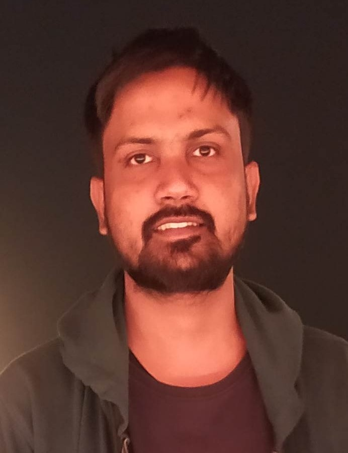

Ujjwal Verma
Indian Institute of Technolgy,Palakkad

Career Objective
I am looking for an opportunity to connect myself with an organization that provides a demanding job to
demonstrate inventive skill and industrious work.
Education
- M.Tech in Computing and Mathematics,IIT Palakkad
- CGPA 7.00 (Till 1st Year)
-
M.Sc in Mathematics and Scientific Computing ,MNNIT Allahabad,Prayagraj
-
B.Sc in Mathematics and Statistics
Technical Skills
- Programming Languages C++,Python and Shell scripting
- Knowledge of Database SQL
- Web Development
Position of Responsibility
- Teaching Assistant for Introduction to Programming (B.Tech 1st Year)
- CDC Coordinator for M.tech Computing and Mathematics
- Class Representative
Achievements
- Qualified IIT JAM
- Qualified GATE
Others
Contact me